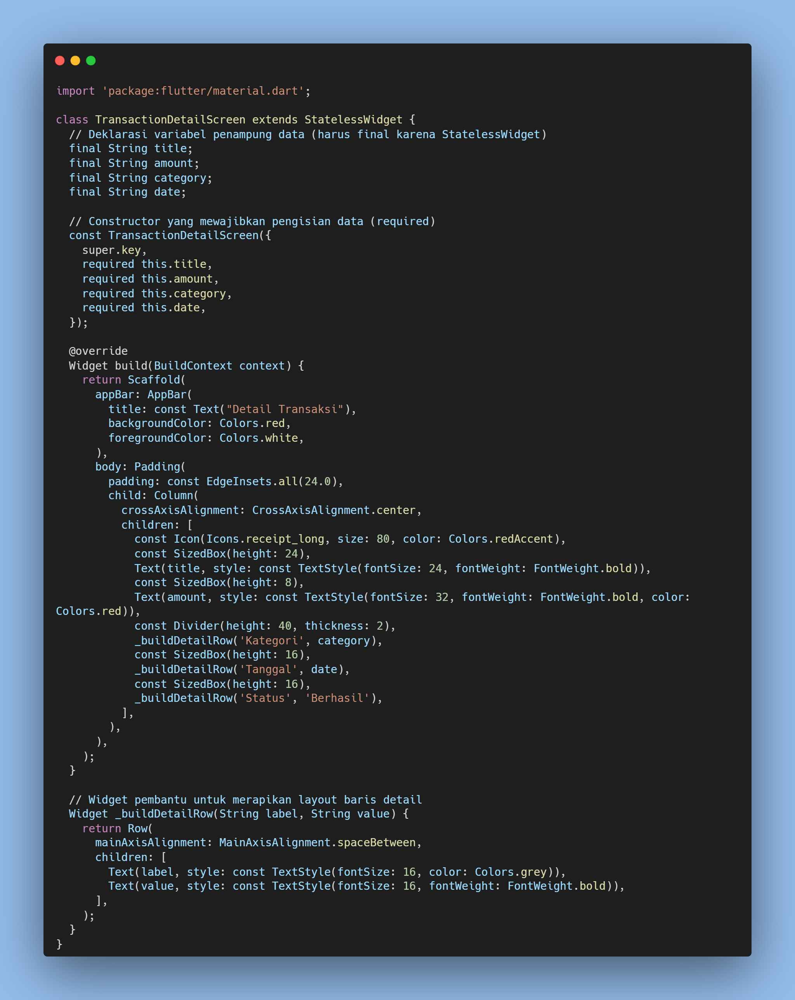
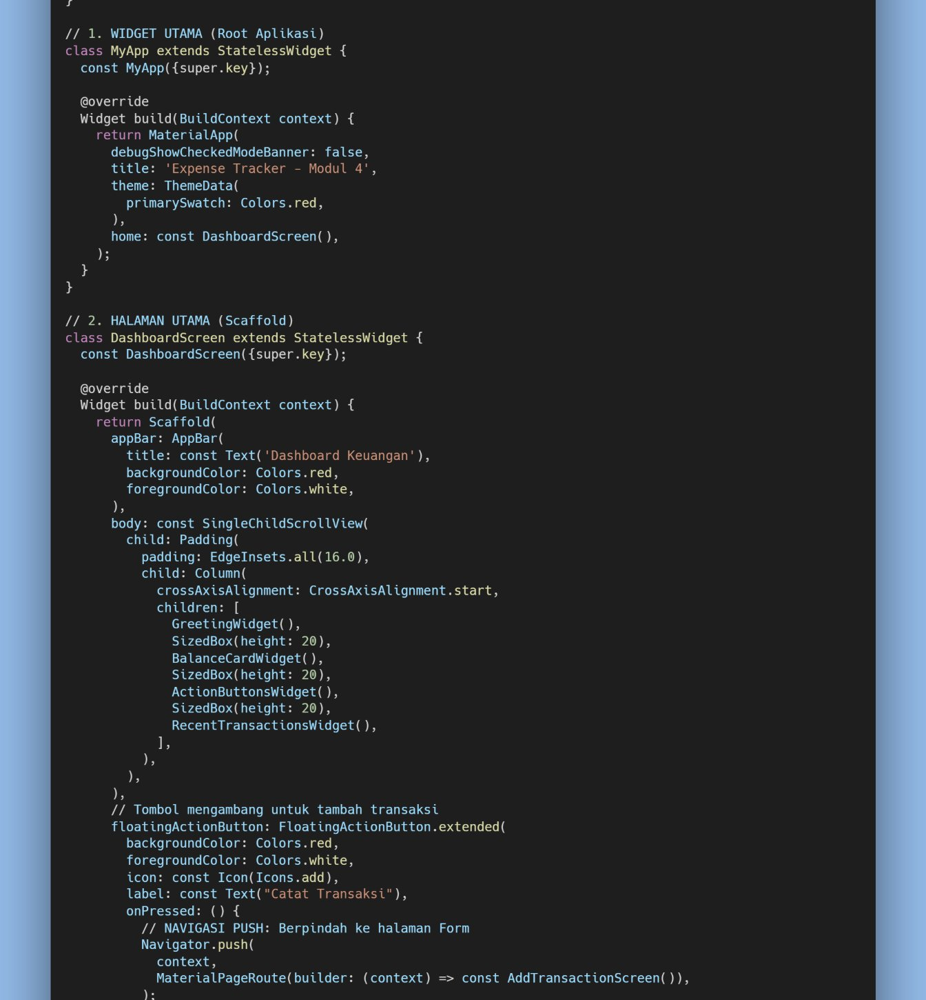
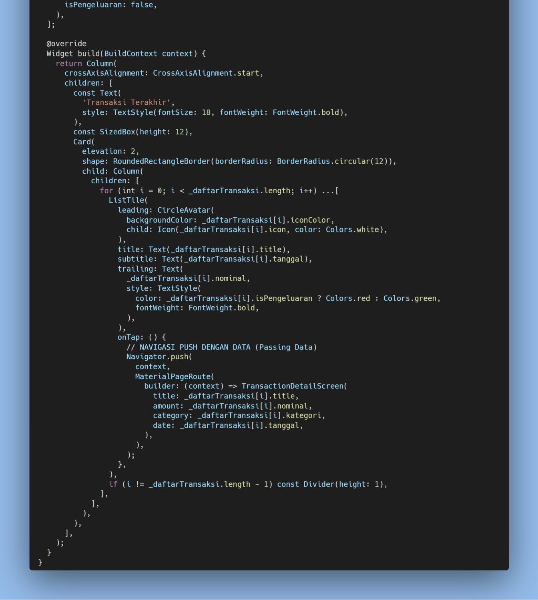
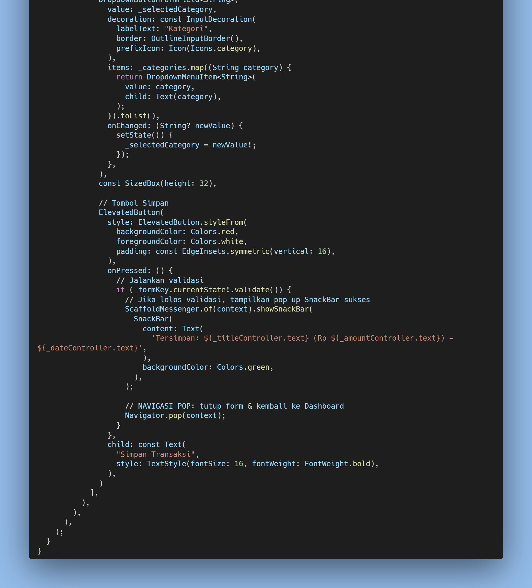
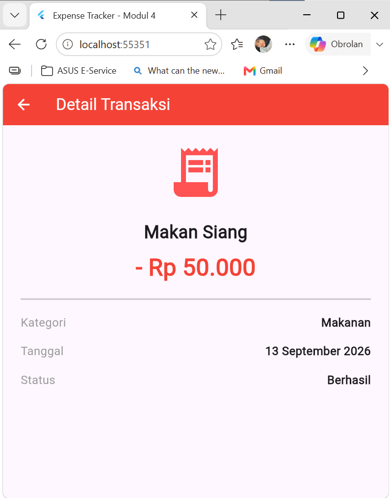

Hampir semua aplikasi mobile tidak hanya terdiri dari satu halaman saja, melainkan beberapa halaman yang saling terhubung — misalnya dari halaman daftar menuju halaman detail, lalu kembali lagi ke halaman awal. Di Flutter, perpindahan antar halaman ini diatur oleh widget bernama Navigator, yang bekerja seperti tumpukan kartu (stack): halaman baru akan diletakkan di atas tumpukan lewat Navigator.push, dan untuk kembali ke halaman sebelumnya cukup menghapus halaman teratas lewat Navigator.pop.
Selain berpindah halaman, pada praktikum ini juga dipelajari cara mengirim data dari satu layar ke layar lainnya menggunakan Constructor. Halaman tujuan perlu menyiapkan variabel bertipe final sebagai penampung data, lalu menandai parameter tersebut dengan required agar data wajib diisi setiap kali halaman itu dibuka. Pada praktikum ini, saya membuat halaman baru bernama TransactionDetailScreen yang menampilkan detail satu transaksi, lalu menghubungkannya dengan daftar transaksi di Dashboard yang sudah dibuat pada praktikum-praktikum sebelumnya.
Setelah menyelesaikan praktikum ini, mahasiswa diharapkan mampu:
Langkah pertama adalah membuat file baru bernama transaction_detail_screen.dart. Halaman ini berupa StatelessWidget yang menyiapkan empat variabel final (title, amount, category, date) sebagai penampung data, dan sebuah Constructor dengan parameter required agar data wajib diisi setiap kali halaman ini dibuka dari halaman lain. Data yang diterima lalu ditampilkan pada UI melalui beberapa widget Text, dibantu fungsi _buildDetailRow() agar baris Kategori, Tanggal, dan Status tidak perlu ditulis berulang.

Pada DashboardScreen, FloatingActionButton yang sudah ada sejak Praktikum 3 tetap dipertahankan untuk membuka AddTransactionScreen lewat Navigator.push. Hanya saja, tema warnanya kini disesuaikan menjadi merah (Colors.red) mengikuti tema Modul 4, dan judul aplikasi diperbarui menjadi "Expense Tracker - Modul 4".

Pada setiap ListTile di daftar "Transaksi Terakhir", ditambahkan fungsi onTap yang memanggil Navigator.push dengan MaterialPageRoute menuju TransactionDetailScreen. Karena daftar transaksi pada proyek ini disimpan dalam satu list (_daftarTransaksi) dan ditampilkan lewat perulangan for, data title, amount, category, dan date yang dikirim lewat constructor diambil langsung dari data baris yang ditekan (_daftarTransaksi[i]), sehingga satu blok kode onTap ini otomatis berlaku untuk seluruh transaksi di daftar, tanpa perlu menuliskan Navigator.push berulang kali untuk setiap item.

Pada file add_transaction_screen.dart, tombol Simpan Transaksi yang sebelumnya hanya menampilkan SnackBar sukses kini ditambahkan satu baris kode lagi: Navigator.pop(context). Baris ini dipanggil tepat setelah validasi berhasil dan SnackBar ditampilkan, sehingga form otomatis tertutup dan aplikasi kembali ke halaman Dashboard setelah transaksi berhasil disimpan — form tidak perlu lagi ditutup secara manual oleh pengguna.

Setelah dijalankan, daftar transaksi pada Dashboard kini bisa ditekan dan akan membuka halaman Detail Transaksi. Terlihat tombol "Panah Kiri" otomatis muncul di AppBar berkat Navigator.push, lalu judul transaksi ("Makan Siang"), nominal ("- Rp 50.000"), kategori ("Makanan"), dan tanggal ("13 September 2026") yang ditampilkan menyesuaikan dengan baris yang ditekan di Dashboard, membuktikan data berhasil dikirim lewat constructor dari halaman sebelumnya.

Dari hasil pengujian, konsep tumpukan (stack) pada Navigator terbukti bekerja sesuai teori: setiap kali Navigator.push dipanggil, halaman baru diletakkan di atas tumpukan dan otomatis menampilkan tombol kembali pada AppBar, sedangkan Navigator.pop menghapus halaman teratas dan mengembalikan tampilan ke halaman sebelumnya tanpa perlu membangun ulang Dashboard dari awal.
Penerapan passing data lewat Constructor juga berjalan dengan baik. Karena TransactionDetailScreen mewajibkan keempat parameternya (required), Flutter akan langsung menampilkan error saat proses development apabila ada data yang lupa dikirim, sehingga kesalahan dapat terdeteksi lebih awal sebelum aplikasi dijalankan. Pendekatan mengirim data langsung dari item _daftarTransaksi[i] di dalam perulangan for juga membuat kode lebih ringkas dibanding menuliskan Navigator.push secara manual untuk setiap transaksi satu per satu seperti pada contoh di modul.
Penambahan Navigator.pop(context) pada tombol Simpan Transaksi melengkapi alur navigasi menjadi satu siklus penuh: dari Dashboard menuju form tambah transaksi (push), lalu kembali lagi ke Dashboard setelah data tersimpan (pop). Dengan begitu, pengalaman pengguna terasa lebih natural karena tidak perlu menutup form secara manual.
Berdasarkan praktikum yang telah dilakukan, dapat disimpulkan bahwa Navigator pada Flutter mengatur perpindahan antar halaman layaknya tumpukan kartu, di mana Navigator.push digunakan untuk membuka halaman baru dan Navigator.pop untuk kembali ke halaman sebelumnya. Pengiriman data antar halaman dapat dilakukan dengan menyiapkan variabel final dan Constructor dengan parameter required pada halaman tujuan, seperti yang diterapkan pada TransactionDetailScreen untuk menerima title, amount, category, dan date dari Dashboard. Dengan menggabungkan Navigator.push, Navigator.pop, dan passing data lewat Constructor, berhasil dibangun alur navigasi yang lengkap pada aplikasi Expense Tracker — mulai dari menambah transaksi baru, melihat detail tiap transaksi, hingga kembali otomatis ke Dashboard setelah data tersimpan.